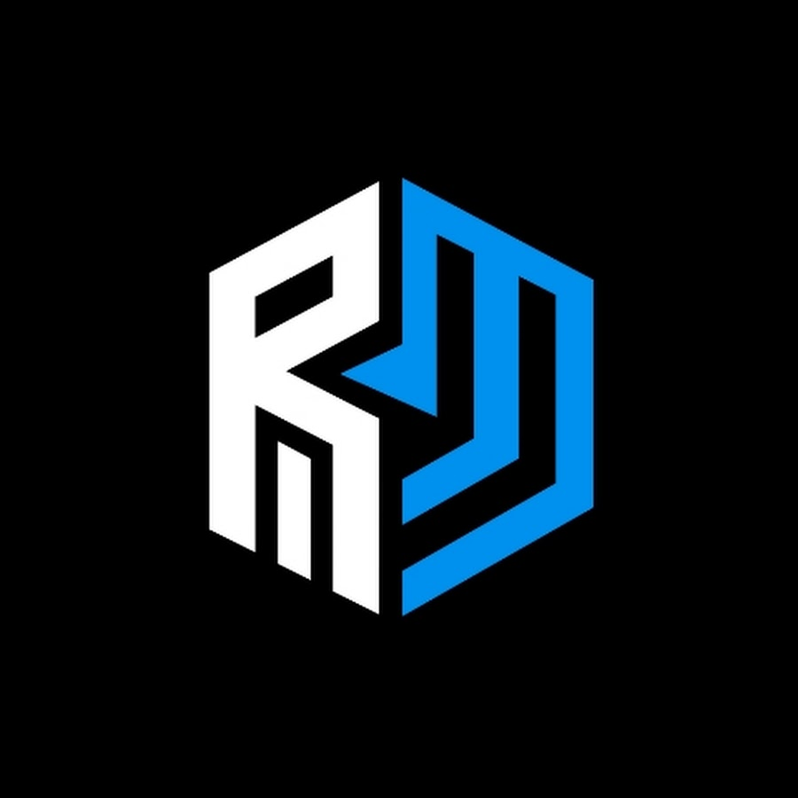
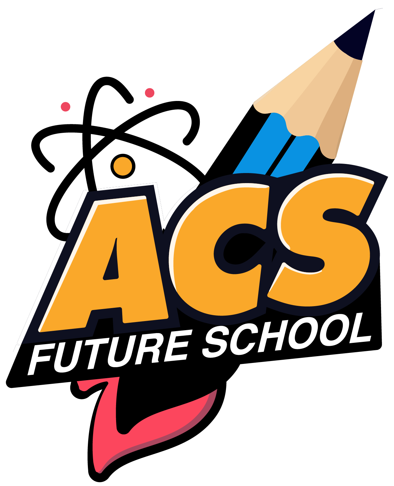

üéì Courses

Redwan Method
Mastering Math & Science through structured video content.

ACS Future
Subject-focused coaching with modern techniques & tools.
üìö ‡¶∏‡¶ø‡¶≤‡ßᇶ¨‡¶æ‡¶∏
পুরো সিলেবাস দেখতে এখানে ক্লিক করুন
FRB-26
Final Revision Batch.

Fahad Tutorial
SSC Board-focused crash programs and mock test series.